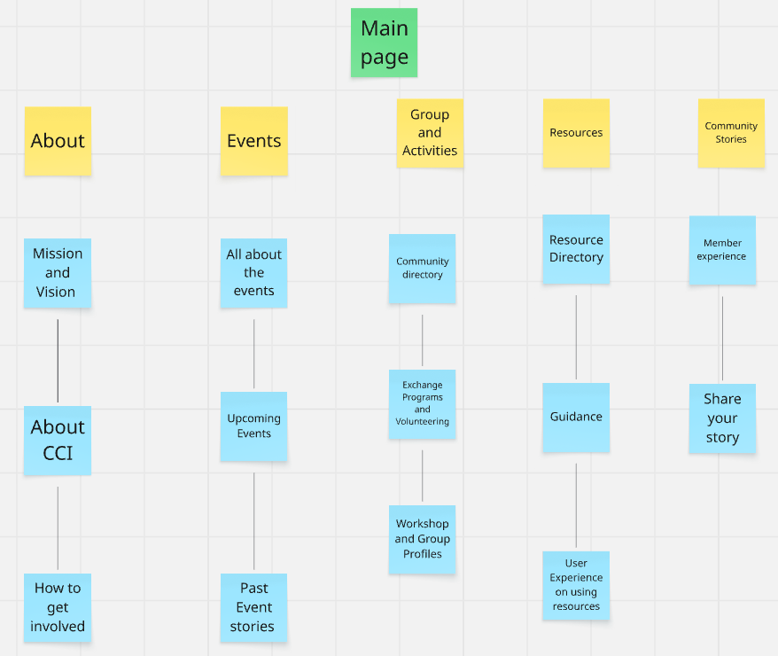

WP3 Site Map
The site map for the website is shown below
A site map of the website is a structured outline of the website's main pages and sections, designed to help users with each section showing various webpages and their sub pages and functions
Hey there, future Aussie legend! üëã
Welcome to the vibrant and diverse international
student community Down Under! We're stoked to
have you join the ranks of amazing individuals
from all corners of the globe who've chosen
Australia as their study destination.
Get ready for an unforgettable adventure filled
with world-class education, breathtaking
landscapes, and a laid-back Aussie lifestyle
that's second to none. Whether you're chasing
academic excellence in bustling city campuses or
exploring the unique flora and fauna in our
stunning natural environments, you're in for an
incredible experience.
This is your space to connect with fellow
international students from across Australia.
Share your experiences, ask questions, find
support, and build friendships that will last a
lifetime. From navigating Aussie slang to
discovering the best hidden gems in your new
city, we're here to help you make the most of
your time here.
So, jump in, say g'day, and let the Aussie
adventure begin! We can't wait to see the
amazing things you'll achieve and the incredible
memories you'll make. Welcome to the family!
üá¶üá∫üåè
Note: this should be your content! These are
your annotations (see L08 for details).
Our Mission
Our mission is to
empower international students in
Australia by fostering a supportive
and inclusive community.
We aim to
provide a platform for connection,
information sharing, and the
celebration of diverse experiences,
ensuring every international student
feels welcome, supported, and
equipped to thrive both academically
and personally.
Our Vision
We envision a vibrant and
interconnected network of
international students across
Australia, where friendships
flourish, knowledge is shared
freely, and every student feels a
strong sense of belonging. We aspire
to be the go-to resource for
navigating the unique challenges and
embracing the incredible
opportunities that come with
studying in Australia.
The Cultural Connection Initiative (CCI) was founded in 2018 by a group of passionate international students who recognized the need for a dedicated support network. Starting as a small gathering in Sydney, CCI has grown into a nationwide organization with chapters in major cities across Australia.
Our team consists of current international students, alumni, and dedicated staff from various universities who understand firsthand the challenges and opportunities of studying abroad. We collaborate with educational institutions, local businesses, and government agencies to create meaningful programs and resources.
CCI is committed to celebrating cultural diversity, promoting cross-cultural understanding, and ensuring every international student has the support they need to make Australia their second home. Through our various programs, events, and resources, we've helped thousands of students navigate their educational journey and create lasting memories in Australia.
There are numerous ways to get involved with our international student community:
Become a Member: Sign up for free membership to access exclusive resources, events, and networking opportunities. Complete your profile to connect with students from your home country or field of study.
Volunteer Opportunities: Join our volunteer program to help organize events, create content, mentor new students, or contribute to our various initiatives. Volunteering is a great way to develop leadership skills and expand your network.
Campus Representatives: Become a campus ambassador to represent the community at your university. You'll help organize local events and serve as a point of contact for students at your institution.
Content Creation: Share your expertise by contributing to our blog, social media, or resource library. Whether it's writing articles, creating videos, or designing graphics, we welcome creative contributions.
Attend Events: Simply participating in our events is a great way to get involved! From cultural celebrations to professional development workshops, there's something for everyone.
Join us for a variety of events designed to enrich your Australian experience, connect you with fellow students, and help you develop personally and professionally. From cultural celebrations to career workshops, we offer something for everyone!
Our comprehensive event calendar provides a month-by-month overview of all upcoming activities across Australia. You can filter events by:
Location: Find events in your city or campus
Category: Cultural, academic, professional, social, or wellness
Format: In-person, virtual, or hybrid
The calendar is updated regularly, and you can sync it with your personal calendar apps (Google Calendar, Apple Calendar, Outlook) to never miss an opportunity. Each event listing includes essential details like date, time, location, registration requirements, and accessibility information.
Global Food Festival (May 20, 2025)
Join us at Federation Square for a celebration of international cuisines! Sample dishes from over 30 countries, learn cooking techniques from student chefs, and enjoy cultural performances throughout the day.
Career Networking Night (June 5, 2025)
Connect with employers eager to hire international talent at this exclusive networking event. Representatives from major Australian companies and international corporations will be present to discuss career opportunities, internships, and recruitment processes.
Winter Welcome Weekend (July 12-14, 2025)
A perfect orientation for new mid-year intake students! This three-day program includes campus tours, practical workshops on Australian academic culture, housing assistance, and social activities to help you settle in and make friends.
Language Exchange Meetup (Weekly)
Practice your English skills or learn another language at our weekly language exchange sessions. These informal gatherings rotate between different coffee shops across the city and are free to attend.
Lunar New Year Celebration (February 2025)
Over 500 students gathered to celebrate the Year of the Snake with traditional performances, calligraphy workshops, and a spectacular lantern parade. The event fostered cultural exchange as students from various backgrounds participated in customs typically observed across East and Southeast Asia.
Professional Development Workshop Series (March 2025)
Our three-part workshop series on "Building Your Career in Australia" was a tremendous success, with participants gaining insights into resume building, interview techniques, and networking strategies specific to the Australian job market. Several attendees have since secured internships through connections made at these sessions.
Beach Cleanup Day (January 2025)
More than 200 international students participated in our annual beach cleanup initiative, removing over 300kg of waste from Bondi Beach. The event concluded with a sustainable picnic and surfing lessons, demonstrating our commitment to environmental stewardship while enjoying Australia's famous beach culture.
Harmony Day Festival (March 21, 2025)
Our celebration of Australia's cultural diversity featured performances, art exhibitions, and storytelling sessions from students representing over 50 countries. The event was covered by local media and attended by university leadership, highlighting the valuable contributions of international students to Australia's multicultural society.
Discover the diverse range of student groups, exchange opportunities, and workshops available to enrich your Australian experience. These connections form the heart of our international student community!
Our comprehensive Community Directory helps you find and connect with various student groups across Australia:
Cultural Associations: Connect with students from your home country or region through official cultural clubs and associations.
Interest-Based Groups: Find communities centered around shared interests such as photography, hiking, gaming, cooking, or music.
Academic & Professional Networks: Join field-specific groups that offer peer support, study sessions, and industry connections related to your discipline.
Sports Teams: Participate in competitive or recreational sports teams specifically welcoming international students.
Each directory listing includes meeting times and locations, contact information for group leaders, membership requirements (if any), and upcoming activities. You can filter the directory by location, category, language, or activity level to find the perfect community for you.
Our innovative Domestic Exchange Program offers opportunities for international students to experience different parts of Australia:
City Swap Weekends: Spend a weekend in another Australian city, hosted by a local international student. In return, you'll host a student from that city when they visit your location.
Regional Immersion: Experience life outside major cities with short-term placements in regional communities, including cultural activities, nature expeditions, and interactions with local residents.
Inter-University Exchange: Study for a term at a partner institution in another Australian state, broadening your academic experience while discovering a new part of the country.
Cultural Homestay Program: Stay with an Australian family during holiday breaks to gain authentic insight into local culture and daily life.
All exchange programs include orientation, safety information, and ongoing support. Application processes, eligibility requirements, and upcoming exchange opportunities are detailed on our Exchange Program portal.
Language Buddies Network
Founded in 2020, this group connects native English speakers with international students seeking language practice. Weekly casual meetups alternate between structured conversation exercises and social activities. The group boasts over 300 members across multiple campuses and has facilitated countless friendships beyond language learning.
International Entrepreneurs Hub
This dynamic collective supports international students with entrepreneurial aspirations. Regular workshops cover Australian business regulations, startup funding, networking strategies, and pitching skills. Several successful student-founded businesses have emerged from this group, including two tech startups that secured venture capital funding.
Cross-Cultural Leadership Workshop
This intensive monthly workshop series explores leadership styles across different cultures and helps participants develop adaptable leadership skills valuable in global contexts. Sessions are facilitated by international faculty members and industry professionals, combining theoretical frameworks with practical exercises.
Global Kitchen Collective
More than just cooking classes, this group transforms food preparation into cultural exchange. Each session features cuisine from a different country, taught by a student from that region. Participants learn about culinary traditions, ingredient sourcing in Australia, and the cultural significance of various dishes while creating memorable shared meals.
Access a wealth of resources designed specifically for international students navigating life in Australia. From practical guides to academic support, we've got you covered!
Our comprehensive Resource Directory categorizes essential tools and information for international students:
Housing & Accommodation: Guides to finding safe, affordable housing, understanding rental agreements, tenant rights, and neighborhood guides for major student hubs.
Legal & Immigration: Information about student visas, work rights, tax obligations, and legal services specializing in international student matters.
Health & Wellbeing: Resources for accessing healthcare, mental health support, OSHC (Overseas Student Health Cover) information, and wellness programs.
Financial Management: Banking guides, scholarship opportunities, budgeting tools, and information about financial assistance programs.
Academic Success: Study resources, research tools, citation guides, and academic writing support tailored to the Australian educational context.
Employment & Career: Job search platforms, resume templates, internship opportunities, and workplace rights information for international students.
All resources undergo regular review by subject matter experts to ensure accuracy and relevance to the current international student experience in Australia.
Our guidance services offer personalized support to navigate your international student journey:
Peer Advisors: Connect with experienced international students who can offer firsthand advice on adjusting to life in Australia. Book one-on-one sessions online or attend drop-in hours at campus locations.
Professional Consultations: Access free consultations with immigration advisors, legal experts, financial counselors, and career coaches who specialize in international student concerns.
Decision-Making Frameworks: Step-by-step guides to help you make informed choices about course selection, housing, work opportunities, and post-graduation planning.
Crisis Support: 24/7 emergency assistance for urgent situations, connecting you with appropriate services and providing guidance during challenging times.
Transition Services: Specialized support for key transition periods, including arrival orientation, mid-study adjustments, and preparation for graduation and post-study options.
Interactive Resource Navigator
Our newly developed digital tool helps you identify exactly which resources you need based on your current situation. Through a series of simple questions about your study stage, specific challenges, and immediate needs, the navigator creates a personalized resource roadmap for you.
Resource Usage Analytics
Based on user feedback and analytics, our most utilized resources include the housing comparison tool, visa extension guides, and mental health support services. Resources are continuously refined based on usage patterns and student feedback.
Accessibility Features
All our resources are available in multiple formats to accommodate different learning styles and accessibility needs. This includes screen-reader compatible documents, video content with captions in multiple languages, and printable quick-reference guides.
Mobile Integration
Access all resources through our mobile app, which features offline functionality for key documents, location-based recommendations, and push notifications for resource updates relevant to your profile and needs.
Feedback Loop
After using any resource, you can provide immediate feedback on its usefulness, clarity, and relevance. This continuous improvement system ensures our resources evolve with the changing needs of international students.
Real stories from real international students across Australia. Discover inspiring journeys, practical advice, and authentic experiences that showcase the diverse tapestry of our community!
Our Member Experience section features in-depth profiles and interviews with international students at various stages of their Australian journey:
Student Spotlights: Each month, we highlight the unique stories of selected students, showcasing their academic achievements, cultural backgrounds, challenges overcome, and contributions to the community.
Alumni Pathways: Follow the post-graduation journeys of former international students who have built successful careers in Australia or globally, offering insight into potential career trajectories.
Day-in-the-Life Series: Authentic glimpses into the daily routines of international students across different cities, universities, and fields of study, providing practical perspectives on student life.
Transformation Narratives: Before-and-after accounts that illustrate personal and academic growth, capturing the transformative impact of studying in Australia on students' worldviews, skills, and aspirations.
Cultural Adaptation Chronicles: Thoughtful reflections on navigating cultural differences, building cross-cultural competencies, and finding balance between embracing Australian culture while honoring home traditions.
We invite you to contribute your unique perspective to our community narrative. Here's how you can share your story:
Written Submissions: Submit personal essays, reflections, or advice articles (500-1500 words) through our online portal. Topics might include arrival experiences, academic insights, cultural observations, travel adventures, or personal growth moments.
Video Diaries: Record short video testimonials or day-in-the-life footage documenting your Australian experience. Our editing team can assist with polishing your final submission.
Photo Essays: Share visual narratives through photography series that capture your student journey, accompanied by brief captions or descriptions.
Podcast Interviews: Volunteer to be interviewed for our monthly podcast "Global Voices in Australia," discussing specific aspects of your international student experience.
Creative Expressions: Submit poetry, artwork, music, or other creative works inspired by your cross-cultural experiences and reflections on life in Australia.
All submissions undergo respectful review, and selected stories receive feature placement on our platforms with full attribution. Contributors retain copyright while granting us permission to share their story within our community channels.
Our community thrives on active engagement. Here's how you can participate in meaningful discussions around shared experiences:
Moderated Comments: Each story features a comment section where you can share reflections, ask questions, or connect with the author. Our community guidelines ensure respectful and constructive conversation.
Reaction System: Respond to stories with nuanced reactions beyond simple likes, including "Relatable," "Inspiring," "Helpful," or "Thought-provoking," helping authors understand their impact.
Follow-up Questions: Submit questions for story contributors that may be answered in follow-up interviews or Q&A sessions, deepening the community's understanding of diverse experiences.
Topic Suggestions: Propose themes for future stories or specific questions you'd like addressed by community members, helping shape our content direction.
Story Circles: Join facilitated virtual or in-person discussion groups centered around particularly impactful stories, creating opportunities for deeper dialogue and connection.
Translation Contributions: Volunteer to translate selected stories into additional languages, making them accessible to a broader international audience and family members back home.